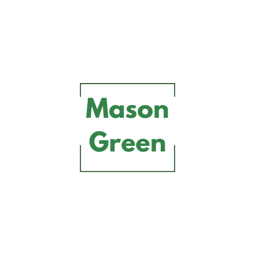
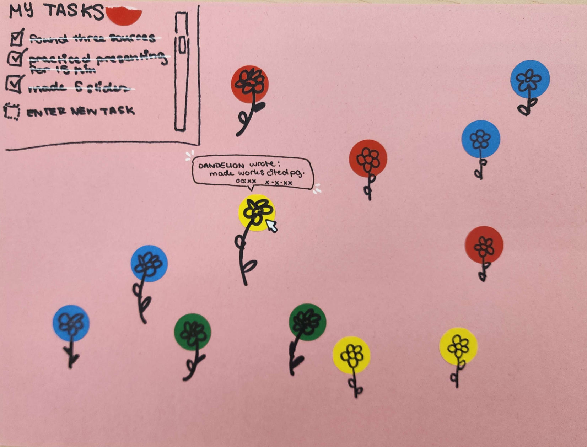

Mason Green Composting was a group collaboration for the Fall 2023 Student Design Challenge at George Mason University. This year’s challenge was to create a physical device or object to enhance participation in urban agriculture.
Below you can find the final product document, slides from a presentation of the project, and comprehensive design documentation.
As part of a design thinking class, I participated in a 3-hour design sprint competition. In pairs, each team was asked to develop a tool, approach, or method to help another assigned team work more effectively.
My team conducted preliminary user research and interviews, and created a low-fidelity prototype of our solution design. Our design sprint documentation and summary is linked below.
Details to come